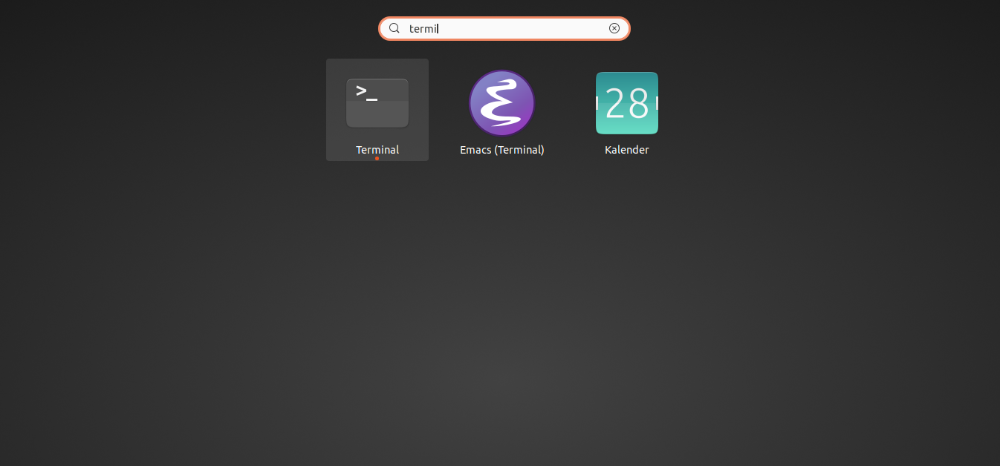

Press the Super Key and then type in "terminal".

Type in "pwd" into the terminal to print the current path.
$ pwd
/home/jdoe/src/experimental-software/linux-training
Changing to another directory can be done with the built-in command cd.
cd ~
cd -